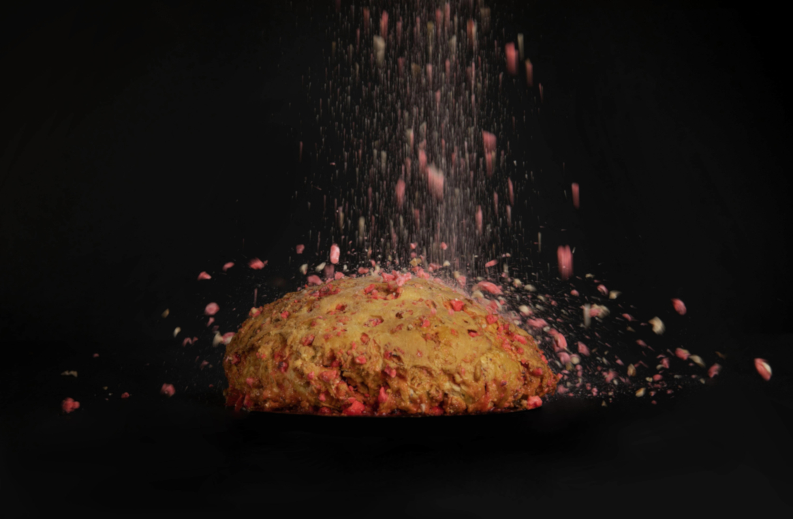

La Praluline
Brioche savoureuse aux éclats de pralines maison et vedette de la Maison Pralus, la Praluline est devenue l’ambassadrice du savoir-faire gastronomique de la région roannaise. La ville voisine de Lyon se l’est même appropriée en tant que spécialité au côté de la traditionnelle tarte aux pralines lyonnaise. Les guides touristiques s’arrêtent à la boutique de Saint-Jean, une étape gourmande devenue incontournable de leurs visites du Vieux-Lyon.
Un beau matin, Auguste Pralus dépose dans sa vitrine une brioche aux pralines roses. Depuis "ce jour béni de 1955", selon les mots de son fils François, la Praluline n'a plus jamais quitté les premières loges des magasins Pralus. Souvent imitée, mais jamais égalée ! A-t-on coutume de dire…
